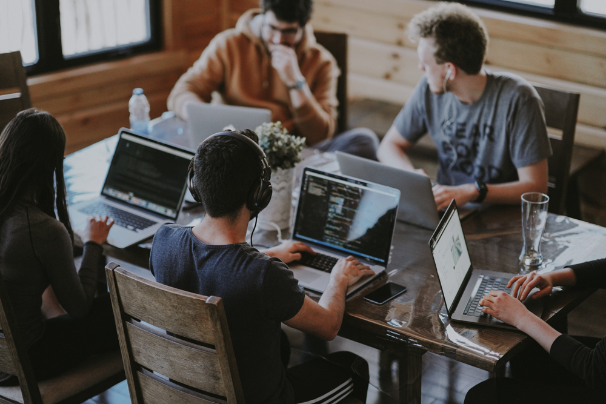

12/09/2022
12/09/2022
The First Day At WildCodeSchool!
The September 12th we started our odyssey (just like Homer) towards adventure. In this particular case, we are heading to our destination: knowledge. Becoming a web developer is an exciting journey, where everyday is marked with pride. Indeed, we are not the same as the ones that started three weeks ago (yes, already that long). A self-evaluation is the key to uphold our accumulated knowledge, that grows exponential to our enthusiasm. Onwards, we go!